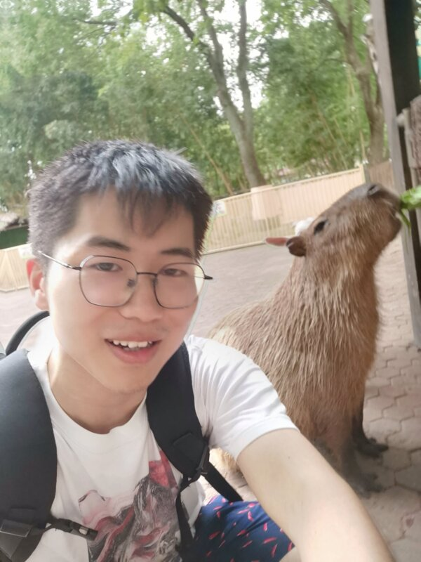

Low-latency H.265 streaming
H.265 streaming over a custom protocol tuned for low latency and drops stale frames.
Source →A 3D portfolio built in c++ using raylib and compiled to web assembly.
Hi, I'm Jiachen Wang, a software engineer working on low latency video streaming systems. This is my website: take a walk around my portfolio by clicking into the window above and walking around the gallery with WASD and the mouse. Click a painting to open its project. Alternatively, the displayed projects are listed below.

H.265 streaming over a custom protocol tuned for low latency and drops stale frames.
Source →C++ with SIMD parsing and 16 threads: 13.8 GB processed in about 0.7 s.
Source →A game made in 72 hours in LD game jam (I am volcanoeyes in the credits).
Play on itch.io →A spinning fractal renderer using OpenGL.
Source →